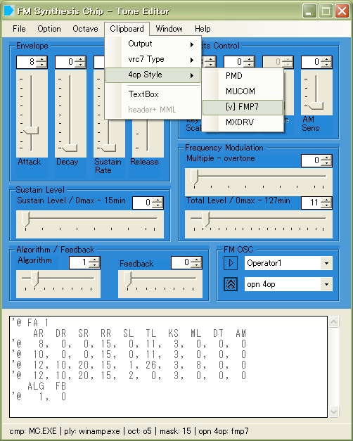

|
fm_editor.exeを起動後、 MUCOM形式を読み込むため、 "4op Style - MUCOM"を選択します。 |

|
本体パネル、"Text Box"へ インポートしたい、MUCOM形式音色を流し込みます。 |

|
"Importボタン"を押すと、
この音色が内部へ読み込みます。
|
|  |
mucom形式からFMP7形式へエクスポートするときは、 "4op Style - FMP7"へ変更することで、 FMP7形式として出力します。 |
|
home>
index>
Tone Import,Export - FM Tone Editor |
2021 04coreworks
|